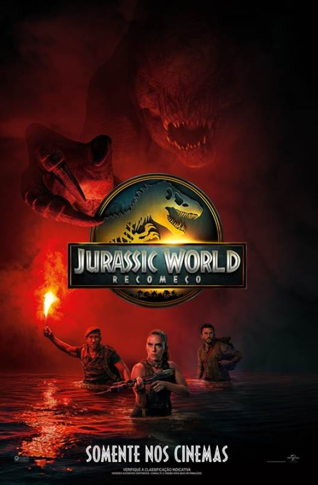

Escolha a imagem que deseja acessar


Escolha a imagem que deseja acessar |
||
| Pagina atual | Pagina dois | Pagina trez |
|---|---|---|
|  |
|
|
Jurassic World Renacimento |
| Sinopse Não recomendado para menos de 14 anos Novo capítulo da franquia Jurassic World, Jurassic World: Recomeço acompanha uma equipe intrépida em uma missão para obter amostras de DNA das três criaturas mais colossais da terra, mar e ar. Cinco anos após os eventos de Jurassic World: Domínio, a ecologia do planeta se mostrou amplamente inóspita para os dinossauros. Os poucos sobreviventes vivem em ambientes equatoriais isolados, onde o clima se assemelha ao que permitiu sua prosperidade no passado. Dentro dessa biosfera tropical, as três criaturas mais colossais detêm a chave para a criação de um medicamento com potencial para salvar inúmeras vidas humanas. A missão, cercada de perigos, coloca a equipe diante de desafios extremos, enquanto lutam contra o tempo e os perigos de um mundo onde a natureza selvagem é a única soberana. |
|---|